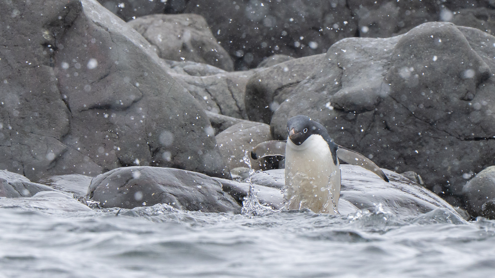
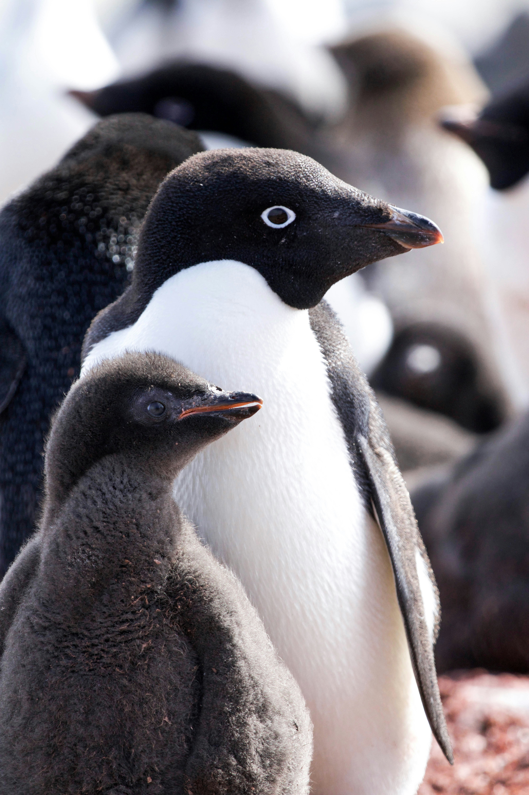

All penguins are quite curious creatures, including the ones that look so elegant like the emperor penguin. While coming up with an idea on what to make this simple website about, I thought about penguins – because why not? The next thing I did was browse for images and found myself fascinated by the beautiful yet silly pictures of Adélie penguins (or pygoscelis adeliae).Adélie penguins commonly reside along the entire coast of the Antarctic and are the most widespread species there alongside the emperor penguin. They are one of only 5 species of penguins that live in Antarctica, joining the emperor, gentoo, chinstrap and macaroni penguins. They were first discovered in 1840 by scientists on a French Antarctic expedition led by Jules Dumont d’Urville who would go on to name Adélie Land after his wife, Adéle. The name was also attributed to this particular penguin species. Their conservation status as of right now is of the least concern.
They are medium sized penguins who weigh between 6 to 13 lbs and stand at nearly 30 inches. Adélie penguins have a life expectancy of 10 to 20 years. The characteristic that distinguishes these penguins is the white ring that surrounds their eye. The males and females are difficult to tell apart since they are of similar size.
In the spring they build their nests out of pebbles on a sloping site so that, when the snow melts, the water runs away from the nest. By mid-November, there are 2 eggs in the nest and parents take turns to incubate the eggs and find food. In January, the chicks have since hatched and are about 3 weeks old, which is big enough to be left alone. That way, both parents can collect food. In February, the chicks begin growing adult feathers. At about 7 to 9 weeks of age, they are ready to go to sea. Most chicks do not return to the breeding colony until they are 3 to 5 years of age and capable of breeding. ⋆｡‧˚❆🐧❆˚‧｡⋆